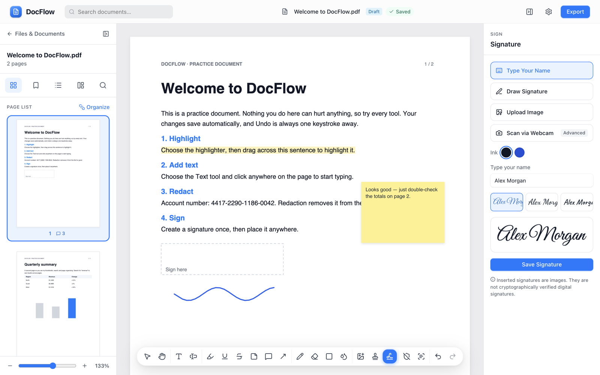
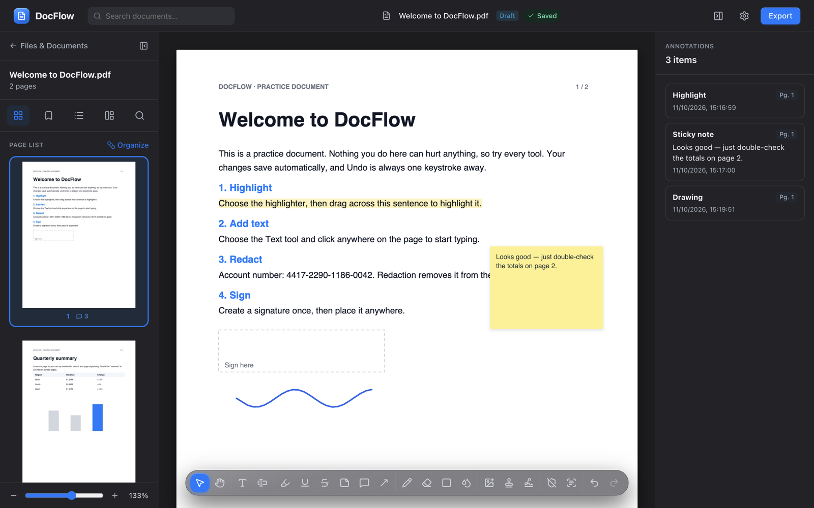
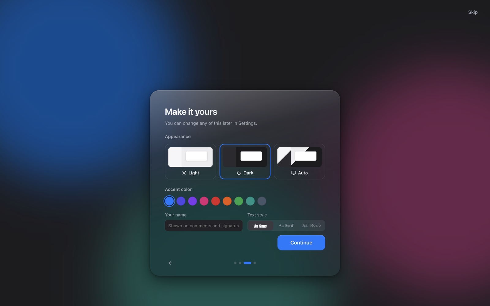

Read, edit, sign and securely redact PDFs — entirely on your Mac. No account. No uploads.
macOS 13+ on Apple Silicon · Also runs in your browser

The tools you reach for every day, in a calm workspace that keeps the document front and center.
Highlight, underline, sticky notes, comments, callout arrows, freehand drawing and shapes.
Add text with full typography controls, or retouch existing lines right on the page.
Type, draw, upload or scan your signature once — then place it anywhere in a click.
Redaction removes content from the file — and DocFlow verifies it's gone before saying so.
Turn scanned pages into searchable, selectable text — recognized right on your Mac.
Drag pages to reorder, delete, merge files, compress, label and file them in folders.
Glass toolbars, smooth motion, a native menu bar and the system font. Light, dark or automatic — with the accent color you like.

Export as PDF, PNG or JPG. Pick a page range, choose quality, and lock it with AES-256 password protection.

No account, no cloud, no tracking. Files are stored and processed locally. The only network requests are ones you start: downloading the OCR engine on first use and searching free stock images.
Download the disk image from the latest release, or build it yourself from source.
Get DocFlow-x.y.z-arm64.dmg from the latest release.
Open the disk image and drag DocFlow into your Applications folder.
The first time, right-click DocFlow › Open, then confirm. After that it opens normally.
Requires Node.js 20 or later.
git clone https://github.com/lakshhaybedi/docflow.git
cd docflow
npm install
npm run dev # web version at http://localhost:5180
npm run dist:mac # builds release/DocFlow-*.dmg